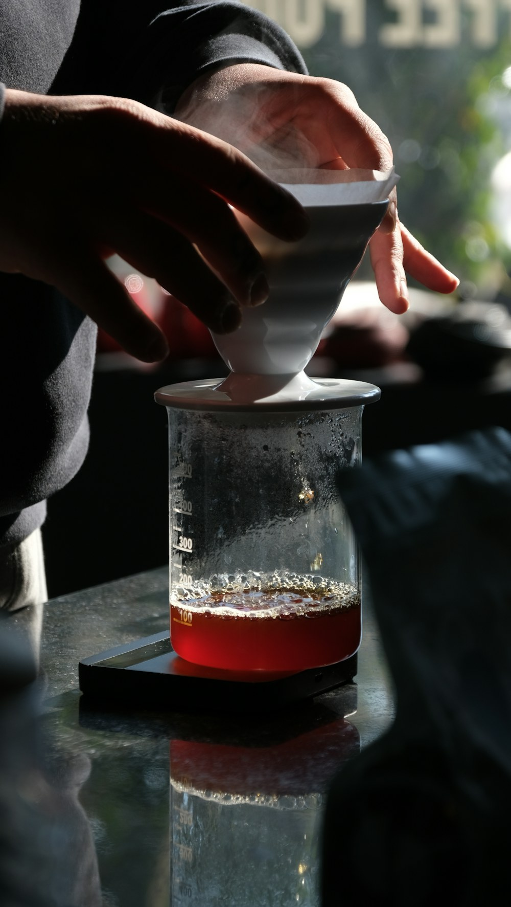

01 / 편집
읽는 사이
문장과 여백의 호흡을 관찰합니다.
구도 · 자료 · 상태
사진의 초점, 가까운 설명, 선택의 결과를 함께 편집합니다. 필요한 블록만 사용하고 색·문구·전체 레이아웃은 프로젝트에 맞게 정하세요.
가상 콘텐츠·로컬 예제입니다. 참고 사진은 실제 상품·매장·수업 자료가 아닙니다. 외부 요청·계정·전송이 없습니다.
일부 이미지를 불러오지 못했습니다. 대체 설명과 본문은 유지됩니다.
01 / 브랜드·사진 우선 식당
넓은 장면과 가까운 피사체를 비교합니다. 캡션과 상세 진입은 사진과 같은 대상을 가리킵니다.
컵과 손잡이가 읽히는 크롭을 고릅니다. 음식 사진에서는 접시와 실제 요리를 같은 방식으로 확인하세요.
가까운 크롭 · 컵과 손잡이에 집중
참고 사진 · 실제 판매 제품 아님
02 / 로컬 서비스
과정 사진 옆에서 차이를 비교합니다. 선택은 즉시 반영하고 결과 위치만 잠깐 강조합니다.

핸드드립 기초 · 1명
선택 예제이며 실제 신청·결제는 없습니다.
03 / 포트폴리오
대표 장면의 비대칭과 목록 카드의 동등 정렬을 분리합니다. 원본 상세는 자르지 않습니다.
01 / 편집
문장과 여백의 호흡을 관찰합니다.

02 / 웹
정보를 찾고, 상태를 구분하고, 다음 행동으로 이어지는 화면의 순서를 관찰합니다.
04 / 전문 서비스
요청과 결과의 관계만 표현합니다. 좁은 내부 세 칸을 모바일에서도 유지하지 않습니다.
시작한 질문
화면을 더 만들기 전에
먼저 해야 할 일을 찾습니다.
산출물 개념 / 계획서
핵심 판단 여러 기능보다 첫 번째 과업을 명확하게.
개념 예시 · 실제 고객 결과물이나 성과 아님
05 / 행사
의미별 묶음과 간격을 유지합니다. 일정은 안정적으로 두고 펼침 상태만 표시합니다.
OPEN DESIGN DAY / 가상 행사
프로그램의 관찰 지점과 기록 방법을 살펴봅니다. 처음 열린 항목도 닫고 다시 펼칠 수 있습니다.
자료의 우선순위와 다음 행동의 관계를 직접 구성해 봅니다.